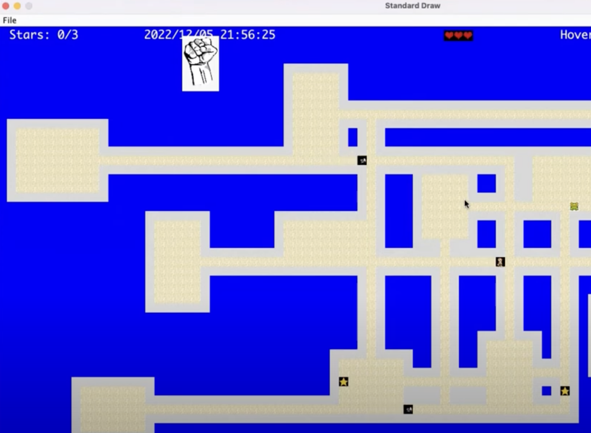
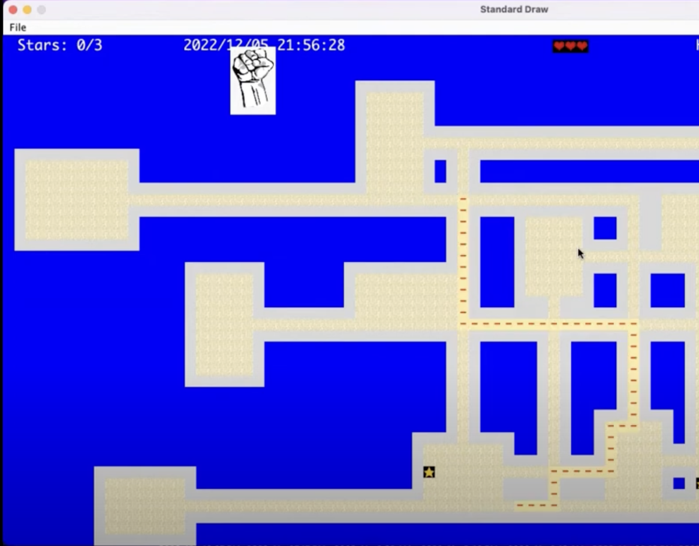
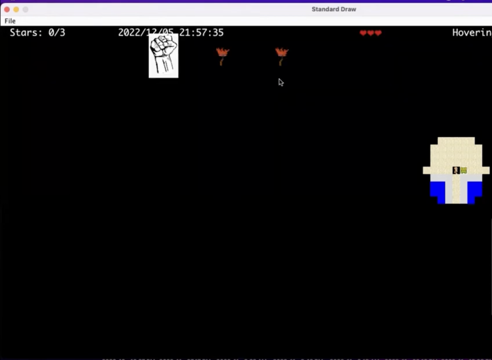
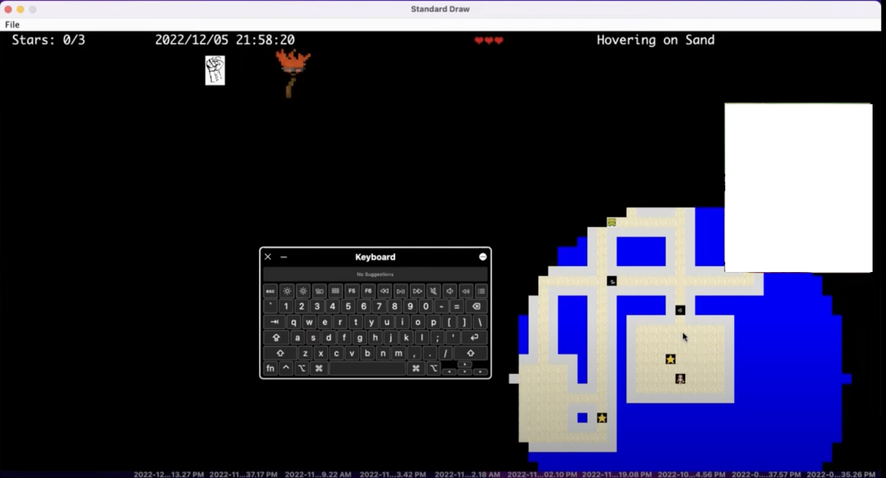

Gameplay
At the start of the game you have three lives, and lose one for each time an enemy encounters you. To win you need to collect the two stars that are randomly placed in the world. The game also supports save states, which are implemented with serialization and can be loaded in to resume gameplay.
The enemies chase you with a path determined by dijkstra's algorithm, which can be toggled on or off to show the enemies path. It is toggeled on below.
Since there is limited vision, I added a merchant character, who you can buy up to three "torches" from, which appear in your inventory on the upper left hand cornor.
When a torch is held and used, it expands your vision radius by 2, allowing you to see your enemies better.

You can increase your vision to arbitrarily large radiuses, doubling the radius each time. However, the larger you expand your vision, the faster the torch burn out, which is when your view range reverts back and you lose a torch.
